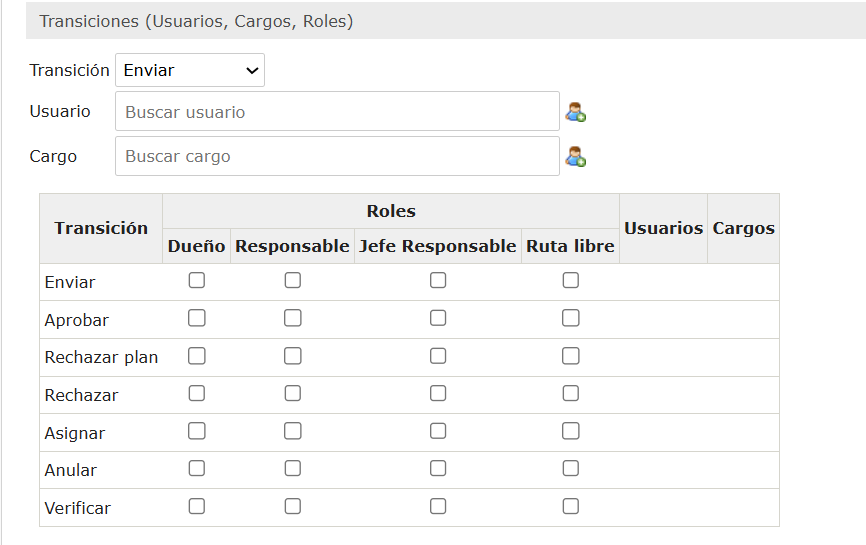
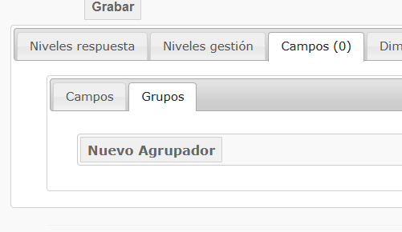

Planes de mejora
Cómo registrar informes de evaluación y sus hallazgos en Almera, y dónde ajustar la configuración cuando un campo, responsable u opción no aparece por defecto.
Reunion de capacitación
Para ver la operación completa, consulte aquí la grabación de la reunión de capacitación.
Crear informe de evaluación
El informe es el contenedor principal. Una vez creado, habilita la opción para cargar los hallazgos asociados.
En la parte superior izquierda de la sección, haga clic en "Nuevo informe".
Diligencie el formulario. Los campos marcados con asterisco son obligatorios.
¿Necesita un sistema de referencia nuevo? Ver A.2
Haga clic en el botón "Grabar".
Crear hallazgo para el informe
Disponible para informes creados y guardados.
Ingrese al informe creado y haga clic en el botón "Adicionar".

En el formulario de registro, diligencie los campos requeridos.
Cargue o adicione archivos adjuntos si el proceso lo requiere.
Utilice el buscador del sistema para encontrar la unidad auditable correspondiente, selecciónela y confirme la asociación.
Use esto si el evaluador que necesita no aparece al crear el informe.
Haga clic en "Crear emisor".
Llene los campos requeridos y guarde.
Use esto si requiere estructurar una nueva norma o modificar comportamientos internos.
Haga clic en "Adicionar sistema de referencia".
Llene los campos y presione "Grabar".
Privilegios (parte inferior). En el cuadro
"Transiciones", asigne las acciones (enviar, devolver, aprobar...) a un usuario
o cargo y presione el ícono verde. Se pueden asignar múltiples responsables.

Ejemplo:

Niveles de respuesta → "Nuevo nivel de respuesta".
Llene Código, Nombre, Peso y Color. Si activa "Genera punto de atención",
el sistema creará un hallazgo automático al marcar esta opción — por ejemplo, "No cumple".
Ejemplo (auditoría externa):

Grupos → "Nuevo agrupador" para crear el contenedor
(defina su ubicación y desactive "Mostrar nombre"). Luego vaya a "Nuevo campo
adicional", llene los datos y elija el tipo de campo — selección múltiple, una línea, etc.
Ejemplo nuevo agrupador:

Ejemplo nuevo campo adicional:

Use esto para modificar las clasificaciones automáticas del sistema.